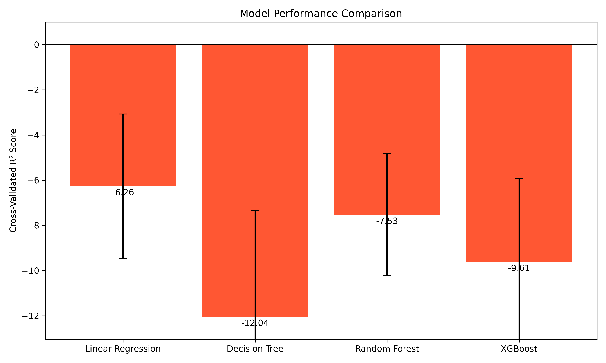

We all want to be happy. But what actually makes a country happy? To answer this, I trained four Machine Learning models on the 2015 World Happiness Report to see if a computer could predict a nation's happiness score based on metrics like GDP, health, and freedom.
I tested Linear Regression, Decision Trees, Random Forests, and XGBoost. The results were surprising:
| Model | Train R² | Test R² | Test Error (MAE) |
|---|---|---|---|
| Linear Regression | 0.803 | 0.864 | 0.348 |
| Random Forest | 0.966 | 0.836 | 0.392 |
| XGBoost | 1.000 | 0.796 | 0.432 |

Because Linear Regression won, we can extract the exact coefficients to see what matters most.

Economy (GDP) and Health are the heavyweights. Surprisingly, Generosity has almost zero mathematical impact on a country's overall score.
I also tried to group countries into "Low", "Medium", and "High" happiness. The model achieved 56% accuracy. Why so low? Because the boundaries between "Low" and "Medium" are artificial.

This project was built using Python, Pandas, Scikit-Learn, and Seaborn. You can view the full source code in the repository!